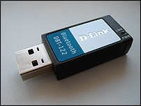

Есть возможность безопасного приема-передачи файлов через проводник пользователя с использованием технологий Bluetooth/IrDA.
Главным образом это можно использовать для мобильных устройств. Необходимо лишь иметь подключенный к компьютеру Bluetooth/IrDA-адаптер с установленными к нему драйверами.
Также имеется возможность загружать файлы в телефон через машину администратора (см.
здесь и
здесь)
Утилита шелла для работы с Bluetooth/IrDA поддерживает драйвера Microsoft, BlueSoleil, WidComm, Toshiba.
Однако,
настоятельно рекомендуется использовать драйвера от Microsoft!
О настройке BlueSoleil, WidComm и Microsoft см. ниже:

Как настроить драйвера BlueSoleil/WidComm?
Единственное, что нужно сделать - отключить в этих приложениях стандартные сервисы приема и передачи файлов (ObjectPush), чтобы весь прием и передача шли через шелл, а не стандартные менеджеры.
Как установить драйвера Microsoft для WinXP SP2 / Vista / Win7?
1) Удалите все предыдущие драйвера и программы Bluetooth, после чего перезагрузите машину
2) Подключите Bluetooth-адаптер и если Windows установит драйвера сама, то пункты 3)-6) выполнять не нужно. Иначе адаптер будет виден в диспетчере устройств как "Неизвестное устройство"
3) Через диспетчер устройств откройте пункт "Свойства" для этого устройства и перейдите на вкладку "Сведения".
Там вы увидите код устройства примерно такого вида:
USB\VID_
1311&PID_
0021\B7E4090D0B00
Запомните выделенные жирным два четырехзначных кода.
4) Через блокнот откройте файл c:\windows\inf\bth.inf (папка inf является скрытой!) и найдите там строку "USB Bluetooth Wireless Adapter". В ней после символа "=" вы увидите описание примерно такого вида:
BthUsb, USB\Vid_
1310&Pid_
0001
А теперь замените 1310 на 1311 и 0001 на 0021 в этой строчке. Естественно, это только пример. В вашем случае числа могут быть другими.
Далее сохраните этот файл и перезагрузите компьютер.
5) Вставьте ваш Bluetooth-адаптер и теперь он уже должен распознаться Windows как "USB Bluetooth Wireless Adapter" в группе "Радиомодули Bluetooth".
Если этого не произошло, то удалите в диспетчере устройств устройство и нажмите "Обновить конфигурацию оборудования".
6) Далее Windows предложит установить драйвера для устройства. Установите их.
7) На панели управления в разделе "Устройства Bluetooth" установите галочку "Включить обнаружение", чтобы другие устройства могли обнаруживать ваше (при этом адаптер должен быть подключен).
Как установить драйвера Microsoft для WinXP SP1?
Установите вот это обновление:
скачать
Также посмотрите вот эти ссылки:
http://support.microsoft.com/kb/883259
http://support.microsoft.com/kb/883258
http://support.microsoft.com/kb/323183
http://support.microsoft.com/kb/841803
Далее выполните установку как и для XP SP2